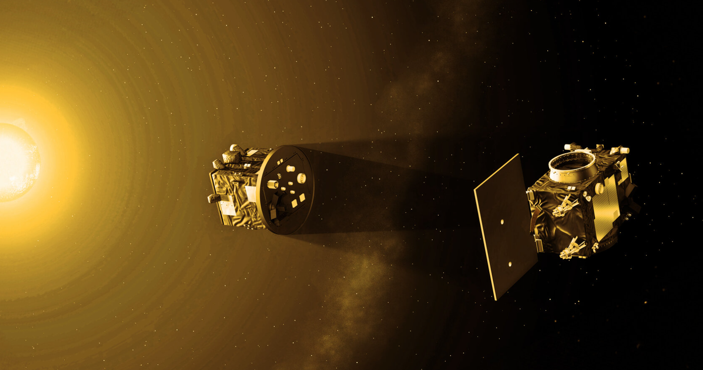

Сонце - найближча зоря#
Фізичні характеристики Сонця. Будова Сонця та джерела його енергії#
Сонце представляє собою одну з численних зір нашої Галактики, яка виконує роль центрального світила Сонячної системи. Його вік оцінюється приблизно в 4.6 мільярдів років. Завдяки сонячному теплу та світлу на нашій планеті існує життя. Відстань між Сонцем і Землею складає лише 150 мільйонів кілометрів, що дозволяє нам спостерігати його як яскравий диск на небосхилі. Дослідження Сонця відіграє надзвичайно важливу роль у розвитку людської цивілізації та має значне практичне застосування.
Визначення температури Сонця базується на застосуванні законів випромінювання "абсолютно чорного тіла". Сонячне випромінювання містить електромагнітні хвилі різноманітних довжин, які людське око інтерпретує як біле світло. Насправді це світло є комбінацією всього спектра електромагнітних хвиль, що охоплює діапазон від червоного до фіолетового. При цьому максимум енергії сонячного випромінювання припадає на жовто-зелену частину спектра, через що астрономи класифікують наше Сонце як жовту зорю, хоча воно випромінює біле світло, а значить і колір має білий. На фотосфері - видимій поверхні Сонця - температура сягає 5780 К.
Світність Сонця \((Ls)\) характеризує загальну потужність його випромінювання, тобто кількість енергії, яку випромінює сонячна поверхня в усіх напрямках за одиницю часу. Щоб обчислити світність, необхідно виміряти сонячну сталу \(q\) - це енергія, яку отримує 1 квадратний метр земної поверхні за 1 секунду при розташуванні Сонця в зеніті. Світність Сонця розраховується множенням значення сонячної сталої на площу сфери з радіусом \(R\):
де \(R = 1.5 \cdot 10^{11}\) м відповідає відстані від Землі до Сонця.
Сонячна стала \(q\) - кількість енергії, що надходить на 1 м² земної поверхні за 1 секунду, коли сонячні промені падають перпендикулярно до поверхні. Сучасні вимірювання на межі верхніх шарів атмосфери Землі показують значення сонячної сталої \(q = 1.4\) кВт/м².

Рис. 1. Сонце через прозорий сонячний фільтр.
CC BY-SA 4.0, Link. Wiki
Будова Сонця#
Сонце являє собою гігантську розжарену кулю плазми зі складною структурою зовнішніх та внутрішніх шарів. Внаслідок фізичних процесів у глибинах Сонця постійно генерується енергія, яка передається до зовнішніх шарів і розподіляється на дедалі більшу площу. Це призводить до поступового зниження температури сонячної плазми в напрямку від центру до поверхні. Виходячи з температурних характеристик і особливостей фізичних процесів, структуру Сонця умовно поділяють на кілька основних областей з різним фізичним станом речовини та механізмами передачі енергії: ядро, зона радіації, конвективна зона та фотосфера.

Рис. 1. Сонце у розрізі. Ядро Сонця є джерелом нейтрино.
Автор: https://commons.wikimedia.org/wiki/User:Kelvinsong - File:Sun_poster.svg, CC BY-SA 3.0, Посилання. Wiki
{kind=link}
Середня відстань до Землі |
1.5 · 10¹¹ м |
|---|---|
Радіус |
696340 км (109 земних радіуса) |
Середній діаметр |
1.39 · 10⁹ м |
Маса |
1.98855 · 10³⁰ кг (330000 мас Землі) |
Середня густина |
1408 кг/м³ |
Прискорення вільного падіння на екваторі |
274 м/с² |
Температура ядра |
1.5 · 10⁷ K |
Температура корони |
від 1 до 3 млн К |
Температура фотосфери |
5800 K |
Світність |
3.846 · 10²⁶ Вт |
Хімічний склад за масою,% |
H₂ - 73.46, He - 24.85 |
Ядро - центральна область Сонця, де відбуваються термоядерні реакції, які є джерелом сонячної енергії. Саме в ядрі відбувається термоядерний синтез, за якого гідроген перетворюється на гелій, що утворює величезну кількість енергії. Ядро, попри відносно малий об'єм, містить значну частину сонячної маси завдяки надзвичайно високій густині, яка зростає в напрямку до центру. Колосальний тиск у поєднанні з надвисокою температурою створюють умови для протікання термоядерних реакцій. Ядро простягається приблизно на 20-25% радіуса Сонця (139000-175000 км). Така розбіжність в оцінці радіуса ядра пояснюється тим, що воно не має чіткої межі і різні фізичні моделі (а якщо точніше сказати, то різні критерії) оцінюють радіус ядра по різному. Температура ядра Сонця в його центрі становить близько 15 000 000 К і зменшується при віддаленні від центра ядра.
Середня густина Сонця нижча, ніж у Землі, але в його ядрі щільність досягає надзвичайно високих значень (150 000 кг/м³).
Зона радіації або зона променистого переносу оточує ядро і простягається на відстань починаючи від зовнішньої межі ядра Сонця і до 70% радіуса Сонця. У цій області енергія передається через механізм променистого переносу - послідовне поглинання та перевипромінювання квантів електромагнітної енергії речовиною. Перевипромінений фотон/квант має напрямок, що не залежить від напрямку поглинутого фотону/кванту і може як потрапити в наступний шар плазми, так і повернутися назад, у нижні шари. Через це проміжок часу, за який багатократно перевипромінений фотон (що початково виник в ядрі) досягає конвективної зони, може становити мільйони років. Для Сонця цей час становить близько 170 тисяч років (у середньому). Температура зони променистого переносу падає від 7 000 000 К до 2 000 000 К від внутрішньої до зовнішньої межі цієї зони.
Тахоклин - перехідна область в Сонці (та інших зорях з масою більше за 0.3 маси Сонця) між зоною променистого переносу та конвективною зоною, що диференціально обертається. Диференціальне обертання - це тип обертання, за якого різні частини об'єкта обертаються навколо спільної осі обертання з різною кутовою швидкістю.
Конвективна зона - шар Сонця, в якому енергія передається через механізм конвекції: гарячі потоки речовини піднімаються вгору, а охолоджені опускаються донизу. Цей шар розташований між верхньою межею зони радіації та видимою поверхнею Сонця (фотосферою). Товщина цієї зони становить близько 200 000 км. У нижній частині конвекційної зони температура становить близько 2 000 000° C. Це достатньо «холодно», щоб важчі іони (такі як вуглець, азот, кисень, кальцій і залізо) могли утримати частину своїх електронів. Це робить матеріал більш непрозорим, через що випромінювання важче проникає. Це затримує тепло, що зрештою робить рідину нестабільною, і вона починає «кипіти» і переміщуватись за рахунок конвекції. На зовнішній частині конвективної зони, температура падає до близько 5800 К.
Гаряча речовина у конвективній зоні піднімається до поверхні, віддає енергію, охолоджується і опускається назад. Така циркуляція створює характерну грануляційну структуру фотосфери, яку можна спостерігати з Землі.
Атмосфера Сонця складається з трьох основних шарів.
Найнижчий шар атмосфери - фотосфера - має товщину близько 100-400 км і сприймається нами як видима поверхня Сонця. Густина газів у фотосфері мільйони разів менша за густину земної атмосфери біля поверхні, а температура зменшується з висотою. Середні шари фотосфери, випромінювання яких переважно досягає Землі, мають температуру 5800 К.
Примітка: температура фотосфери змінюється від 4400 К до 6600 К, а середня температура становить 5772 К, тобто близько 5800 К, як і зазначено вище.
Фотосфера практично повністю поглинає й перевипромінює енергію, що йде з глибини зорі, тобто практично все світло Сонця, яке ми бачимо, приходить саме з фотосфери. Зазвичай саме фотосферу використовують для визначення радіуса зорі. Оскільки товщина фотосфери для більшості зір набагато менша за сам радіус, ми бачимо край Сонця чітким, а радіус виявляється досить точно визначеним, попри відсутність у зір твердої поверхні.
За допомогою сонячного телескопа у фотосфері можна спостерігати специфічну зернисту структуру - грануляцію, яка є прямим проявом конвективних процесів.
На фотосфері можна спостерігати сонячні плями - темніші області з сильним магнітним полем і нижчою температурою (близько 4 000 К). Сонячні плями часто супроводжуються спалахами та викидами коронарної маси.
Хромосфера («сфера кольору», від давньогрецьких слів χρῶμα (khrôma) «колір» і σφαῖρα (sphaîra) «сфера») - другий шар атмосфери зірки, розташований над фотосферою та нижче сонячної корони. В атмосфері Сонця хромосфера має висоту приблизно від 3000 до 5000 кілометрів, або трохи більше 1% радіуса Сонця при максимальній товщині. Температура хромосфери коливається від 4000 К прямо над фотосферою до 25 000 К (по деяким джерелам, 35 000 К) у верхній частині хромосфери.
Назва була запропонована англійським астрономом Норманом Лок'єром після проведення систематичних спостережень за Сонцем, щоб відрізнити шар від фотосфери, що випромінює біле світло. Хромосфера ("сфера кольору") отримала свою назву через червонуватий відтінок, який можна спостерігати під час повних сонячних затемнень.
Хромосфера має характерний червоний колір через електромагнітне випромінювання в спектральній лінії гідрогену \(H_{\alpha}\) (Wiki). Інформація про хромосферу в основному отримана шляхом аналізу випромінюваного нею електромагнітного випромінювання.

Рис. Спостереження Сонця через оптичний телескоп з Н-альфа-фільтром.
By Paul Stewart from Timaru, New Zealand - Today's Ha Sun, CC BY 2.0, Link. Wiki
Сонячний перехідний шар розташовується безпосередньо над хромосферою і під надзвичайно гарячою короною. Його товщина оцінюється в декілька сотень кілометрів (цей шар надзвичайно вузький порівняно із шарами, які він розділяє). Різкий стрибок температури - це його найбільш визначальна риса перехідного шару. Температура неймовірно швидко зростає, підвищуючись приблизно від 25 000 К у верхній частині хромосфери до понад 1 мільйона Кельвінів у основі корони.
Різкий стрибок температури перехідного шару досі залишається предметом наукових досліджень.

Рис. Приблизна температура в сонячній атмосфері відносно висоти над поверхнею Сонця.
By Andrew Fraknoi, David Morrison, Sidney C. Wolff - https://openstax.org/books/astronomy/pages/15-1-the-structure-and-composition-of-the-sun, CC BY-SA 4.0, Link. Wiki
Найвіддаленіший і найбільший шар сонячної атмосфери - сонячна корона - характеризується надзвичайно високою температурою, яка сягає від 1 до 3 млн градусів Кельвіна. Товщина сонячної корони Cонця оцінюється від 1 до 3 радіусів Сонця (це оцінка розмірів корони під час Сонячних затемнень), однак немає якоїсь чіткої межі, де закінчується корона, оскільки вона плавно перетікає в сонячний вітер.

Рис. Сонячна корона під час повного сонячного затемнення 21 серпня 2017 року.
By Michael S Adler - Own work, CC BY-SA 4.0, Link. Wiki
Геліосфера — зона у космічному просторі навколо Сонця, оточена міжзоряним простором, що перебуває під впливом сонячного вітру. Майже вся речовина в межах геліосфери походить із Сонця.
Межею геліосфери вважають геліопаузу, де потік сонячної плазми врівноважується гідродинамічним та магнітним тиском міжзоряного газу. За сучасними даними ця межа розташована на відстані близько 100 а.о. і деякою мірою залежить від сонячної активності. Форма геліосфери несиметрична, що зумовлено рухом Сонця відносно навколишнього середовища.
На відстані 60–70 а.о. (10 млрд км) від Сонця сонячний вітер рухається зі швидкістю понад 200 км/с, але внаслідок взаємодії з міжзоряним простором дуже швидко гальмується. Межа, на якій відбувається гальмування сонячного вітру міжзоряним простором, має назву головної ударної хвилі (англ. termination shock). Цієї межі, яка розташована на відстані близько 90 а.о. від Сонця, досягли 2003 року космічні апарати Вояджер-1 та Вояджер-2 та у інших роках космічні апарати " Піонер 10" й "Піонер 11".

Рис. Умовне зображення геліосфери та розташування у ній космічних апаратів Вояджер-1 та Вояджер-2.
Автор: NASA/Walt Feimer, Суспільне надбання (Public Domain), Посилання. Wiki

Рис. Діаграма структури геліосфери, форми приблизні та засновуються на даних апарата Interstellar Boundary Explorer.
Суспільне надбання (Public Domain), Посилання. Wiki
Активність Сонця змінюється циклічно приблизно кожні 11 років. Ці цикли впливають на кількість сонячних плям, інтенсивність сонячного випромінювання та інші магнітні явища.
Цікаво зауважити, що питома потужність енергогенерації Сонця досить незначна: один кілограм сонячної речовини генерує лише близько 0,001 Вт енергії. Для порівняння, людське тіло випромінює в середньому 100 Вт, що приблизно в тисячу разів перевищує питому потужність сонячної речовини такої ж маси. Проте унікальність Сонця полягає в тому, що воно підтримує цей рівень випромінювання протягом мільярдів років, забезпечуючи стабільну енергетичну підтримку Землі та інших тіл Сонячної системи.
Сучасне дослідження Сонця#
SOHO (Solar and Heliospheric Observatory)
Місія спільного проекту NASA та ESA, спрямована на безперервне спостереження сонячної активності, вивчення корони, сонячного вітру та внутрішніх процесів в Сонці. Космічний апарат для спостереження за Сонцем був запущений 1995 року, а розпочав роботу у травні 1996 року. Розроблений NASA та ESA. Найбільша за своєю функціональністю космічна обсерваторія спостереження за Сонцем на початку XXI ст. Перебуває на геліоцентричній орбіті в точці Лагранжа L1 між Землею та Сонцем.

Рис. Супутник SOHO.
http://sohowww.nascom.nasa.gov/gallery/images/SOHOLower2.html, Public Domain, Link. Wiki

Рис. Точки Лагранжа та стабільність у Лагранжевих точках системи двох тіл зі значною різницею мас (напр. Сонце - Земля). Стабільні орбіти навколо точок L4 та L5 позначено синіми трикутниками.
Автор: NASA - http://map.gsfc.nasa.gov/m_mm/ob_techorbit1.html, Суспільне надбання (Public Domain), Посилання. Wiki

Рис. Точки Лагранжа
Автор: cmglee - Власна робота, CC BY-SA 3.0, Посилання. Wiki

Рис. Ілюстрація зіткнення Теї з Землею, та утворення Місяця.
CC BY-SA 3.0, Посилання. Wiki
SDO (Solar Dynamics Observatory)
Забезпечує високоточну і часту зйомку Сонця в різних діапазонах хвиль, що дозволяє дослідникам в реальному часі аналізувати змінність сонячної активності. Початкова запланована тривалість місії становила 5 років, але зараз (станом на 2025 рік) становить уже більше 15 років.

Рис. Супутник Solar Dynamics Observatory.
By NASA, Public Domain, Link. Wiki
Parker Solar Probe
Місія NASA, яка зближується із Сонцем, щоб збирати дані про його зовнішнє середовище, структуру корони та процеси, що відбуваються в надгарячому плазмовому середовищі. Апарат було запущено 12 серпня 2018 року.
5 листопада 2018 року зонд Parker Solar Probe пролетів на відстані 24 млн км від світила, рухаючись зі швидкістю 343112 км/год. Зонд зібрав наукові дані і встановив рекорди серед штучних об'єктів: зі швидкості руху та наближення до Сонця.
30 червня 2024 року, згідно повідомлення NASA, зонд Parker Solar Probe здійснив свій 20-й близький проліт повз Сонце. Зонд підлетів до нашої зірки на менш ніж 5 % відстані від Землі до Сонця та встановив новий рекорд швидкості, адже він рухався зі швидкістю 635266 км/год.
24 грудня 2024 року, об 11:53 за Гринвічем (13:53 за Києвом), зонд Parker Solar Probe наблизився до Сонця на рекордно близьку відстань - 6.1 млн км. Швидкість апарата при цьому склала 690 тис км/год.

Рис. Модель апарату Parker Solar Probe.
By National Aeronautics and Space Administration (NASA), Public Domain, Link. Wiki
3Д мапа від NASA. Поточне положення Parker Solar Probe на орбіті навколо Сонця.
PROBA-3 - це космічна технологічна демонстраційна місія з подвійним зондом, що розроблена і проводиться Європейським космічним агентством (ЄКА/ESA). Вона присвячена високоточному польоту супутників у формації для досягнення наукової коронографії. PROBA-3 є частиною серії супутників PROBA, які використовуються для перевірки нових технологій і концепцій космічних кораблів, а також мають наукові інструменти. Місія була успішно запущена 5 грудня 2024 року ракетою ISRO PSLV-XL з космічного центру Сатіша Дхавана в Шріхарікоті, Індія
PROBA-3 складається з двох незалежних космічних апаратів із стабілізацією по трьох осях: космічного апарата Coronagraph (CSC) і космічного апарата Occulter (OSC). Політ космічних апаратів відбувається близько один до одного на високоеліптичній орбіті навколо Землі з апогеєм на висоті 60 500 км.
Літаючи в щільній формації на відстані близько 150 метрів один від одного, Occulter буде точно відкидати свою тінь на телескоп Coronagraph, блокуючи пряме світло Сонця. Це дозволить Coronagraph знімати слабку сонячну корону у видимому, ультрафіолетовому та поляризованому світлі протягом багатьох годин поспіль і при цьому не бути засліпленим фотосферою Сонця. Наукова мета полягає в спостереженні корони приблизно до 1.1 сонячного радіуса у видимому діапазоні довжин хвиль.

Рис. PROBA-3 місія. Credit: ESA - European Space Agency